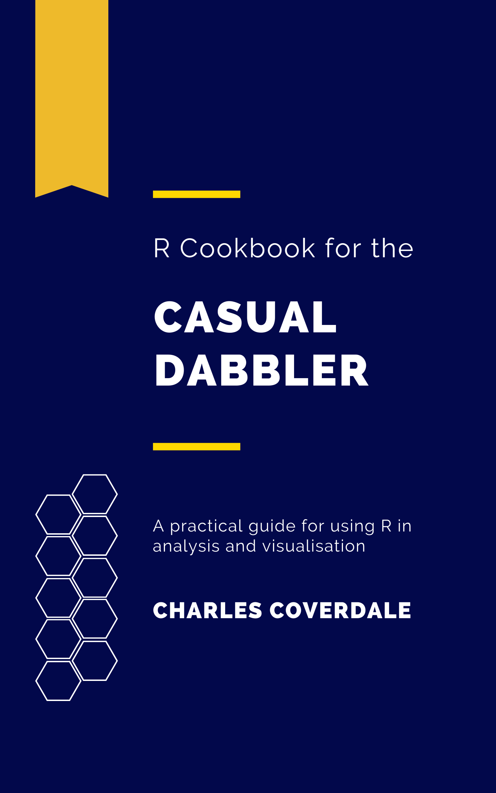

R cookbook for the casual dabbler
2021-12-12
Chapter 1 Introduction

G’day and welcome to R cookbook for the casual dabbler.
Some history: I use R a lot for work and for side projects. Over the years I’ve collated a bunch of useful scripts, from macroeconomic analysis to quick hacks for making map legends format properly.
Historically my code has been stored in random Rpubs documents, medium articles, and a bunch of .Rmd files on my hardrive. Occasionally I feel like doing things properly - and upload code to a repository on github.
It doesn’t take a genius to realize this isn’t a very sustainable solution - and it also isn’t very useful for sharing code with others. It turns out 2-years of lockdown in Melbourne was enough incentive to sit down and collate my best and most useful code into a single place. In the spirit of open source, a book seemed like the most logical format. The following is a very rough book written in markdown - R’s very own publishing language.
1.1 Usage
In each chapter I’ve written up the background, methodology and code for a separate piece of analysis.
Most of this code will not be extraordinary to the seasoned R aficionado. The vast majority can be found elsewhere if you dig around on stackexchange or read some of Hadley’s books.
However I find that in classic Pareto style ~20% of my code contributes to the vast majority of my work output. Having this on hand will hopefully be useful to both myself and others.
1.2 Additional resources
The R community is continually writing new books and package documentation with great worked examples. Some of my favourites (which all happen to be written in the R markdown language) are:
1.3 Limitations
I’ll be honest with you - there’s bound to be bugs galore in this. If you find one (along with spelling errors etc) please email me at charlesfcoverdale@gmail.com with the subject line ‘R cookbook for the casual dabbler.’